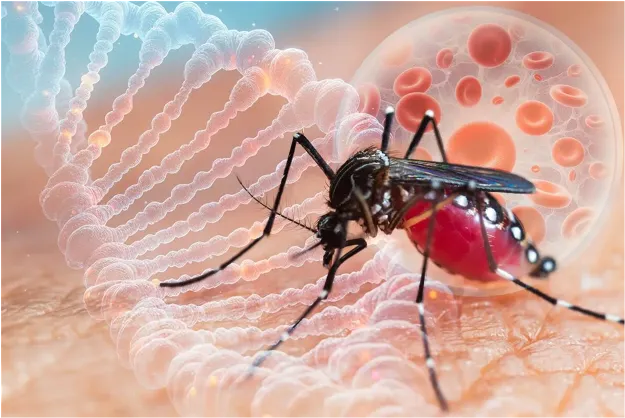
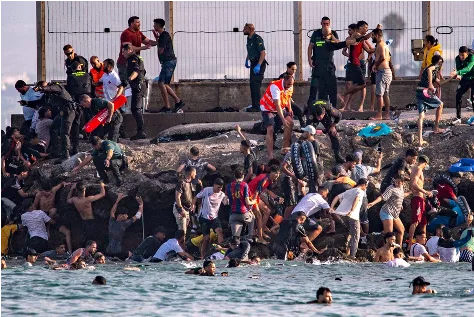
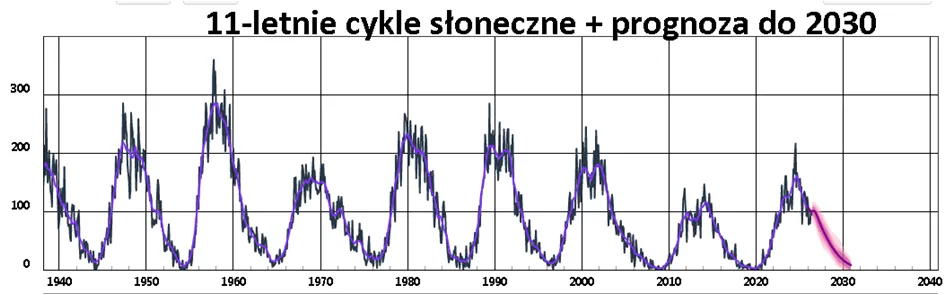

Gorączka krwotoczna nie jest taka zła, gorsza jest gorączka umysłowa.
Gorączka krwotoczna nie jest taka zła, gorsza jest gorączka umysłowa.
Media uwielbiają epidemie i stosy trupów, jeśli tylko ktoś w Europie zostanie na lotnisku zdemaskowany jako “nosiciel” media mają ucztę. Publika jest już nauczona mocnych słów i każdy, nawet dziecko wie, że na hasło “gorączka krwotoczna” trzeba się bać. Przewiduję, że temat afrykański będzie mocno w tym sezonie “grzany”. Masowe ataki na hiszpańską granicę w Afryce zostały sprowokowane na zawołanie przez hiszpańską władzę, w tym wypadku sądowniczą. Orzeczenie sądu hiszpańskiego o zakazie deportowania nielegalnych imigrantów (Willkommen! Wir schaffen das! - Witajcie! Damy radę!) to powtórka z Angeli Merkel.

Hiszpanie mają umysły mocno rozpuszczone lewicową nostalgią za absurdem. Ma to podłoże mocno lewicowe, komunistyczne, oparte o etos “wojny domowej z faszystą " gen. Franco. Nie była to żadna wojna domowa tylko powtórka z rewolucji sowieckiej, czyli desant “międzynarodowego kapitału” i banalna kradzież resztek po imperium. Co ciekawe początek tej klęski to przegrana wojna z USA w 1898 r. o Karaiby. USA po zwycięstwie rewolucji Radzieckiej w Rosji zostały największym “inwestorem” w ZSRR i zbudowały cały sowiecki przemysł przy pomocy technologii Forda. Potem przez ponad pół wieku USA za bezcen kupowały wytwory przemysłu bloku sowieckiego, gdzie robotnicy zarabiali 10-15 USD miesięcznie, czyi tyle ile kosztowały dwie winylowe płyty Michaela Jacksona.
Sowiecka idea to cały świat pod czerwonym sztandarem, zatem zdobycie przyczółków nad Atlantykiem było dla Stalina bardzo ważne. Wspierał czynnie ten bandycki napad na pogrążone w chaosie, upadające katolickie imperium.
Ale co z gorączką krwotoczną? Nie jest to nic fajnego, ale nie jest to jedyna choroba. Chodzi o grupę chorób, wywoływanych rożnymi patogenami. Kilka z nich ma przebieg dramatyczny i śmiertelność na poziomie 10-40 %, ale tych zgonów w skali globu jest nieistotnie mało wśród wszystkich zgonów, źródła podają 60 tysięcy . Łącznie zgonów na świecie w roku jest ponad 60 mln, z czego w wypadkach samochodowych ginie ponad 1,1 miliona ludzi. 300 tysięcy umiera tonąc w wodzie, co daje taki zgon średnio co ok. 2 minuty przez 24/7/365. i nikt o tym nie pisze i nie musimy chodzić ciągle w kamizelkach ratunkowych!
Jeden z patogenów odpowiedzialny za gorączki krwotoczne, Denga, odpowiada za blisko 100 milionów zachorowań/zakażeń rocznie, a śmiertelność jest na poziomie grypy, co daje śmiertelność 0,034% dla całej grupy gorączek krwotocznych. Zatem, o co chodzi? Chodzi o to, że media kiedyś podchwyciły mrożący krew w żyłach termin “gorączka krwotoczna”, gdy jakiś lokalny patogen wybił pół wsi w buszu i tak zostało. Teraz to bardzo wygodne, gdy ktoś przechodzi wariant Denga i można mu zrobić zdjęcie w szpitalu, gdy ma w nosie rurki, bo nikt nie powie, że wokół nas chodzi odziesiątki milionów ludzi zarażonych tym patogenem i nic o tym nie wie, “chorują oni bezobjawowo” jak mówią “eksperci”… Wszyscy na tym profilu mamy z tego po doktoracie od 2020 roku, więc kończę wątek.
Nie udało się Komunistycznej Międzynarodówce, czyli oficjalnej instytucji, Kominternowi (1919–1943) zbrojnie podbić całego świata i zamienić go w piekło. Obecnie stosowana metoda masowego ogłupiania przed rabunkiem sprawdza się doskonale. Ludzie są opodatkowani (łącznie +-70%) na poziomie nieznanym w żadnej despotii w znanej nam 7000 lat historii, a wprost domagają się nowych podatków, aby “poprawić im poziom bezpieczeństwa”. Nowe wydatki na finansowy lej nazywany “służbą zdrowia” będą w ich umysłach uzasadnione, abyśmy “wszyscy nie umarli, gdy z Afryki przyjdzie to coś!”.
Organizatorzy życia społecznego, nazwijmy tak dla poprawy humoru naszych ciemiężycieli, doskonale znają podstawowe fakty regulujące życie na Ziemi, np. bardzo silny wpływ aktywności Słońca na nasz biologiczny dobrostan, jest to opisane szczegółowo w literaturze naukowej, a szczególnie jest to ważne dla wojska. Co 11 lat niska aktywność Słońca implikuje wysoki poziom szkodliwego promieniowania kosmicznego na Ziemi, co gwałtownie zwiększa liczbę ciężkich zachorowań na wszystko i ogólną śmiertelność w populacji. Większość ludzi odczuwa wtedy ogólny spadek formy, częstsze infekcje, itp.

Właśnie wychodzimy z tej lepszej połówki cyklu i przez 5 kolejnych lat będziemy zbliżać się do apogeum okresu gorszego. Szczególnie społeczeństwa z dużym udziałem ludzi starszych będą w opresji. Starszych ludzi w złej formie łatwo się straszy i wprowadza w różne psychozy. Można im np. sprzedawać na poczcie nic nie warte “plecaki ucieczkowe za 300 zł”, co opisałem niedawno na moim FB, ale to jest drobiazg, przy tym czego możemy się spodziewać. Nie znam szczegółowo planów naszych ciemiężycieli, ale możemy się spodziewać, że skorzystają z nadchodzącej okazji, analogicznie jak w roku 2020, choć wtedy sytuacja była zaskakująco komicznie-dramatyczna. Z powodu skrajnie lekkiej zimy 2019/20 chorych i zgonów wiosną 2020 (szczyt covid!) było znacznie miej niż w latach poprzednich, co raportowały zakłady pogrzebowe, nie ukrywając swych problemów finansowych. Gdyby nie “dodatki /tarcze covidowe” branża funeralna byłaby w poważnych tarapatach, mogliby zacząć grzebać żywcem, co w USA jest od kilu dekad w mediach promowane.
Paweł Klimczewski